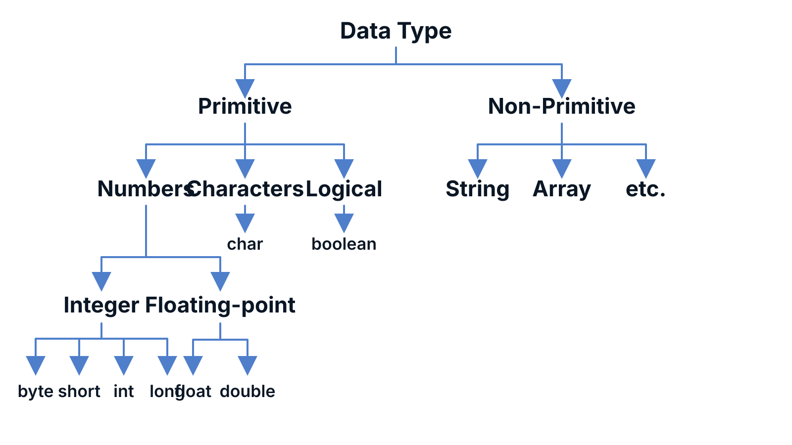

Week 2 - Hook
Where does a program keep information?
Programs remember names, ages, prices, answers, and status values by placing them in named spaces in memory.
Roadmap
Today's flow
Learning Goals
By the end of Week 2
- Use valid identifiers and avoid keywords.
- Choose primitive data types and
String. - Write declarations, assignments, initializations, and constants.
- Read console input with
Scanner. - Trace values and debug beginner type/input errors.
Section 01
Variables and Memory
Give values names so the program can remember and use them.
Visual Model
Memory spaces have three features
studentAgenameData typeintkind of valueStatevariable/finalcan change?Value19stored dataIdentifiers
Identifiers name things in a program
Variables, constants, classes, and methods all use identifiers.
Rules
Valid Java identifiers
- May contain letters, digits, underscore, and dollar sign.
- Must not begin with a digit.
- Must not contain spaces.
- Must not be a Java keyword.
- Java is case-sensitive.
Classify
Valid or invalid?
| Identifier | Decision | Reason |
|---|---|---|
MonthlySalary | ||
4example | ||
student mark | ||
class | ||
variable3 |
Keywords
Keywords are reserved words
Words such as class, public, static, void, int, double, and final already mean something to the compiler.
Do not use keywords as variable names.
Variables
A variable stores a value
int age = 19;
double gpa = 4.6;
String name = "Sara";The value may change while the program runs.
Section 02
Java Data Types
Choose the right kind of storage for each value.
Data Types
Every variable has a type
A data type tells Java what kind of value is stored and what operations make sense for that value.
Visual Overview
Java Data Types: The Big Picture

Primitive vs Reference
Two beginner-level groups
Primitive
Java has exactly eight primitive types:
byte, short, int, long, float, double, char, boolean
Non-primitive / reference
String and arrays are not primitive types.
For now, treat them as richer values that Java stores and uses through references. Objects and classes come later.
Primitive Types
Java's eight primitive types
| Kind | Types | How beginners choose |
|---|---|---|
| Small to large whole numbers | byte short int long | Use int for normal counts; use long for very large counts. |
| Decimal numbers | float double | Use double for normal decimal calculations. |
| One character | char | Use single quotes, such as 'A'. |
| True/false | boolean | Use true or false. |
Visual Model
Primitive type families
byte short int long|Floating pointfloat double|Single symbolchar|Truth valuebooleanint and double are common defaults because they fit most beginner programs.
Storage Snapshot
Primitive storage at a glance
| Type | Stores | Common size |
|---|---|---|
byte | Integer | 1 byte |
short | Integer | 2 bytes |
int | Integer | 4 bytes |
long | Integer | 8 bytes |
float | Decimal | 4 bytes |
double | Decimal | 8 bytes |
char | Character | 2 bytes |
boolean | true or false | JVM dependent |
Reference Type
String stores text
String course = "CS0122";
String message = "Welcome to Java";String begins with an uppercase letter because it is not a primitive type.
Literals
Literal values have forms
| Value | Type idea |
|---|---|
42 | whole number |
3.14 | decimal number |
'A' | single character |
"A" | string text |
true | boolean |
Section 03
Declare, Assign, Initialize
Separate creating a variable from placing a value inside it.
Statements
Declaration, assignment, initialization
int score; // declaration
score = 10; // assignment
int level = 2; // initializationA declaration creates the memory space. Assignment places a value into it.
Variables Change
New values replace old values
int seats = 20;
seats = 18;
seats = 21;The variable seats holds only the current value.
Constants
final means do not change
final String COURSE_CODE = "CS0122";
final double PI = 3.14159265;Constant names are commonly uppercase with underscores between words.
Conventions
Readable naming style
Variables
studentName, numberOfStudents
Constants
COURSE_CODE, MAX_SCORE
Type Compatibility
The value must match the type
int number = 5; // OK
int number = "five"; // type error
char grade = 'A'; // OK
char grade = "A"; // type errorSection 04
Console I/O
Display values and read keyboard input with Scanner.
Output
Standard output
System.out.print("Name: ");
System.out.println(name);
System.out.println("Age: " + age);+ joins text with values when one side is a String.
Whitespace
Spaces in strings are real output
System.out.print("Hello");
System.out.print("Java");
System.out.print("Hello ");
System.out.print("Java");Spaces outside strings mostly help readability. Spaces inside strings are printed.
Input
Standard input with Scanner
Ali->System.ininput stream->
Scannerreads tokens/lines->Variable
nameLive Code
Create and use a Scanner
import java.util.Scanner;
Scanner input = new Scanner(System.in);
System.out.print("Name: ");
String name = input.nextLine();The import tells Java where to find the Scanner class.
Scanner Methods
Match the method to the type
| Method | Reads |
|---|---|
nextLine() | A full line of text |
next() | One word |
nextInt() | An integer |
nextDouble() | A decimal number |
nextBoolean() | true or false |
Live Code
Console profile program
Scanner input = new Scanner(System.in);
System.out.print("Student name: ");
String name = input.nextLine();
System.out.print("Age: ");
int age = input.nextInt();
System.out.println(name + " is " + age + " years old.");
input.close();Predict
Trace values before running
int x = 3;
int y = x + 2;
x = 10;
System.out.println(x);
System.out.println(y);Does changing x later change y?
Section 05
Input Pitfalls
Trace what the keyboard leaves behind for the scanner.
Common Input Mistake
nextInt() leaves the newline
19[Enter]->nextInt()takes
19->Buffer still has[Enter]->nextLine()may read empty text
int age = input.nextInt();
input.nextLine(); // clear the leftover newline
String city = input.nextLine();Brief Official Demo
GUI input with JOptionPane
import javax.swing.JOptionPane;
String name = JOptionPane.showInputDialog("Name:");
JOptionPane.showMessageDialog(null, "Hello " + name);This appears in the university material. Week 2 labs stay console-first with Scanner.
GUI Conversion
Dialog input is text
String text = JOptionPane.showInputDialog("Age:");
int age = Integer.parseInt(text);
double price = Double.parseDouble("19.75");Parsing converts text digits into a numeric value. This is different from casting numeric types.
Debug
Beginner errors to catch
- Using a variable before assigning a value.
- Putting text into an
int. - Using spaces in identifiers.
- Forgetting
import java.util.Scanner;. - Typing text when
nextInt()expects a number.
Practice
Build one line at a time
- Declare variables.
- Print labels.
- Read input.
- Print a summary.
- Trace values after each input.
Recap
Week 2 essentials
- Identifiers name memory spaces.
- Types protect values and operations.
- Variables can change; constants should not.
Scannerconnects keyboard input to variables.- Tracing helps explain code before debugging it.